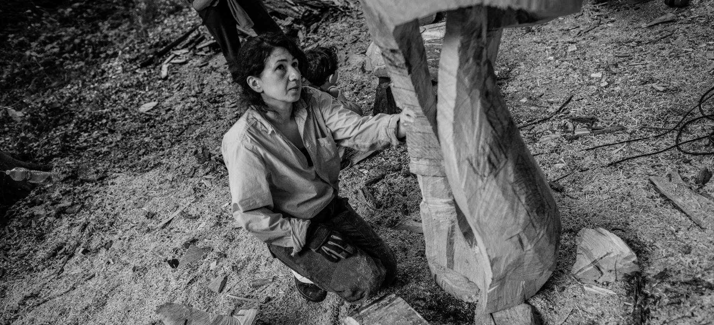

Je joue avec les espaces vides et pleins. À l’instant même où l’un domine l’autre, le volume prend vie. Ma vision se développe au fil du travail et je me laisse diriger par l’énergie des matériaux. Mes matériaux de prédilection sont plutôt le bois et le métal.
Ma formation
- Diplôme de sculpture à l’école d’art de Braine l’Alleud
- Licence en graphisme obtenu à “University of Art, Téhéran” en 1995
- Née à Téhéran en 1969, en Belgique depuis 2007
Expositions
- 2023: ABC&Design
- 2023: Biennale de Montreux
- 2022: Biennale de la sculpture, Lasne
- 2022: Sculpture monumentale Square Armand Steurs, Bruxelles
- 2021: Galerie Didier Devillez, Bruxelles
- 2021: TEN Gallery, Knokke-Hesit
- 2020: Sculpture monumentale Square Armand Steurs, Bruxelles
- 2019: Fête de la Saint Martin, Tourrines-La-Grosse
- 2019: Expo coup de coeur #WeArt XL, Ixelles
- 2019: Exposition “chemins de traverse” au Château de Bosc, France
- 2018: Parcours d’artiste, Tourrines-La-Grosse
- 2013: Galerie ROLLEBEEK, Bruxelles
- 2013: Exposition à Belfius ART, Bruxelles